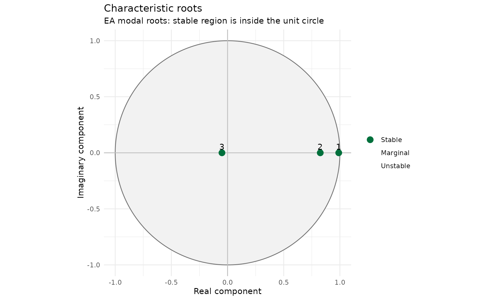
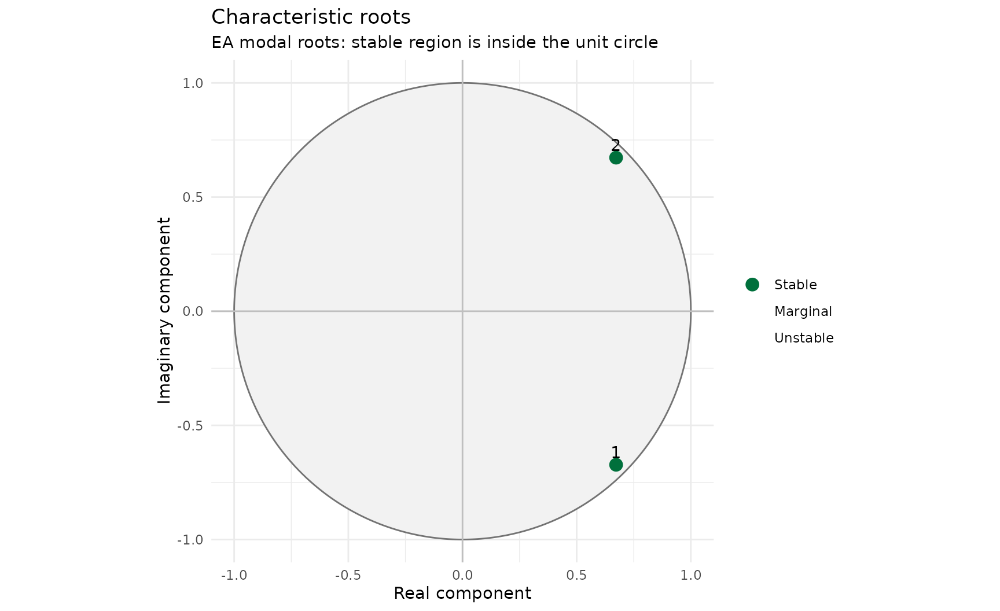

Characteristic Roots for Novice Flood Forecast Modellers
Source:vignettes/roots-for-novices.Rmd
roots-for-novices.RmdPurpose
“ARMA for Novice Flood Forecast
Modellers” explains what AR does and why. This vignette is the deep
dive on one part of that picture: characteristic roots, what they are,
how reach.postproc uses them, and what they mean for
whether a parameter set is safe to run operationally. No background in
time-series mathematics is assumed.
What a root actually is
The error between an observation and a model’s simulation rarely moves in one simple way. It can fade quietly, linger stubbornly, or flip between positive and negative a few times before settling down. A root describes one of those behaviours in isolation.
Think of it like this: the projected error isn’t one wobble, it’s several wobbles happening at once, added together. A third-order (AR(3)) model has three roots, so three wobbles. One might be a slow, gentle fade. Another might fade twice as fast. A third might flip sign at every timestep while shrinking rapidly. Add all three together and you get the projected error the package actually reports.
flowchart LR
A[Root 1: a slow fading wobble]
B[Root 2: a faster fading wobble]
C[Root 3: a quick flip-flopping wobble]
D[Add them together]
E[Projected error]
A --> D
B --> D
C --> D
D --> E
You never have to work out the wobbles yourself. roots() does that for
you, starting from the AR coefficients you supply. What matters is being
able to read what comes back, because that’s what tells you whether a
parameter set will behave sensibly before you ever run it against real
data.
Reading one root
A root is a single point on a two-dimensional map: it has a real part and (sometimes) an imaginary part. Where that point sits tells you everything about how its wobble behaves.
The reference point is the unit circle — an
imaginary circle of radius one drawn around zero.
reach.postproc always plots this circle alongside the
roots, because where a point falls relative to it is the whole
story:
flowchart TD
A{Where does the root sit?}
B[Inside the unit circle]
C[On the unit circle]
D[Outside the unit circle]
E[Fades away: stable]
F[Never fades: marginal]
G[Grows forever: unstable]
A --> B --> E
A --> C --> F
A --> D --> G
A root’s distance from zero is called its modulus. Modulus less than one means stable (the wobble fades). Modulus exactly one means marginal (it never fades, it never grows, it just sits there forever). Modulus greater than one means unstable (the wobble grows, which is never acceptable in an operational parameter set).
Try it on the Environment Agency’s own defaults:
parameters <- default_ar_parameters()
root_information <- roots(parameters)
root_table(root_information)[, .(root_id, root_real, root_imaginary, root_modulus, modal_stability)]
#> root_id root_real root_imaginary root_modulus modal_stability
#> <int> <num> <num> <num> <fctr>
#> 1: 3 0.98961490 1.100114e-24 0.98961490 Stable
#> 2: 2 0.82517187 -1.306909e-24 0.82517187 Stable
#> 3: 1 -0.04978678 2.067952e-25 0.04978678 Stable
plot_ar(root_information, root_definition = "modal")
All three points sit inside the circle, and the
modal_stability column confirms it: Stable.
That’s a basic precondition for a usable parameter set, though not the
only one — more on that below.
Decay time
Knowing a root is stable tells you that it fades. Decay time tells you how fast. It’s the number of timesteps it takes for a non-oscillating wobble to fall to about a third of its starting size (37%, to be precise — the same “about a third” rule that governs anything decaying exponentially).
root_table(root_information)[, .(root_id, decay_time_steps, decay_time_hours)]
#> root_id decay_time_steps decay_time_hours
#> <int> <num> <num>
#> 1: 3 95.7909755 23.94774387
#> 2: 2 5.2038996 1.30097489
#> 3: 1 0.3333327 0.08333317A root with a decay time of 2 steps has essentially vanished within a
handful of timesteps: useful for reacting to a sudden change, useless
for remembering anything beyond the immediate present. A root with a
decay time of 200 steps barely moves across an entire forecast: useful
for representing a slowly-drifting bias, dangerous if it’s slow enough
to keep an old, now-irrelevant error alive for days.
reach.postproc’s assess() checks both
ends of that range, which the next section covers.
Oscillation and complex roots
Some wobbles don’t just shrink smoothly, they swing between positive and negative while they shrink — like a plucked guitar string that’s getting quieter but still vibrating back and forth. A root like this isn’t one number, it’s a pair: two complex roots with matching real parts and opposite imaginary parts, called a conjugate pair. You never see half a swinging wobble on its own; the maths requires both halves of the pair to exist together, or the result wouldn’t make physical sense.
The Environment Agency’s own defaults already contain one oscillating
root — notice root_id 3 above has a nonzero
root_imaginary. It’s a real number that happens to be
negative, which produces the simplest possible oscillation: a flip in
sign at every single timestep. That’s one edge case of oscillation. The
more general case is a true complex-conjugate pair, swinging with a
longer period. Here’s a parameter set built to show one:
oscillating <- ar_parameters_from_timescales(
decay_times = 20,
oscillation_periods = 8,
label = "Oscillating pair example"
)
oscillating@order
#> [1] 2
oscillating_roots <- roots(oscillating)
root_table(oscillating_roots)[, .(root_id, root_real, root_imaginary, root_modulus, oscillation_period_steps)]
#> root_id root_real root_imaginary root_modulus oscillation_period_steps
#> <int> <num> <num> <num> <num>
#> 1: 2 0.6726208 -0.6726208 0.9512294 8
#> 2: 1 0.6726208 0.6726208 0.9512294 8
plot_ar(oscillating_roots, root_definition = "modal")
Two roots, same real part, opposite imaginary parts — a genuine
conjugate pair, visibly off the horizontal axis in the plot. The
oscillation_period_steps column says this pair completes
one full swing every 8 timesteps. A single
decay_times/oscillation_periods entry like
this always produces two roots once its conjugate
partner is added automatically, so a model order can be larger than the
number of timescales you asked for — worth remembering when you’re
counting up to AR(2) or AR(3).
Compare that against a root with
oscillation_period_steps of Inf: that’s not
oscillating at all, it’s a plain positive real root settling smoothly.
Inf here doesn’t mean “forever growing,” it means “no
oscillation, ever” — a common point of confusion worth flagging
explicitly.
How the package uses roots
Everything downstream of a parameter set flows from its roots:
flowchart LR
A[AR coefficients]
B[roots]
C[root_table and plot_ar]
D[assess]
E[decompose_ar]
F[Pass or fail decision]
G[See each wobble separately]
A --> B
B --> C
B --> D --> F
B --> E --> G
-
roots()calculates the roots once and packages them up for everything else to use.root_table()’s output actually contains two complete sets of root columns,root_real/root_imaginaryandlag_root_real/lag_root_imaginary: two different, equally valid ways of writing the same maths, which is why you’ll sometimes see a different-looking (but not wrong) answer if you check a root calculation against a general statistics source rather than this package. The “Mathematical and Developer Validation” vignette has the full explanation; this package’s own plots and checks always use the first set. -
root_table()andplot_ar()let you inspect them directly, as above. -
assess()runs the Environment Agency’s acceptance criteria against the roots and returns a pass or fail with a plain-English summary. -
decompose_ar()shows each root’s individual wobble over time, rather than only the sum — useful when a projected error looks odd and you want to know which root is responsible.
Further into the package, the event-triggered and time-jumped AR
methods (assess_jump_size(), forecast_tj_ar())
rank roots by decay time to judge whether a chosen “jump” size is
sensible. If that territory is new to you, see the “Event Triggered and Time
Jumped AR” vignette once you’re comfortable with the material here —
the same unit-circle thinking carries straight over.
What stability means for your forecast
“Stable” is not a maths nicety, it’s an operational requirement.
Translating the acceptance criteria assess() applies:
- Any growing root fails outright. A correction that gets bigger every timestep, forever, is never acceptable in a flood forecast.
- A root that decays too slowly fails. If a root barely fades across the whole forecast horizon, a single bad observation at the start can keep distorting the update long after it should have been forgotten.
- A model where every root decays too fast fails. If nothing sticks around for more than a step or two, the AR model isn’t using any real memory of the recent error, and arguably isn’t doing anything worth having.
- Strong, slow oscillation fails. A correction that keeps flipping sign every few steps looks like noise, undermines confidence in the forecast, and rarely reflects anything physically real. A very rapid oscillation is tolerated only when it also disappears almost immediately, as with the EA defaults’ fast root above.
- Only AR(2) and AR(3) are permitted by default. Higher orders aren’t inherently invalid mathematically, but they fall outside what’s been operationally reviewed.
assessment <- assess(parameters)
assessment@summary
#> [1] "Pass. All roots meet the accepted criteria."
assessment_table(assessment)
#> test_id test failed affected_roots
#> <char> <char> <lgcl> <list>
#> 1: order Permitted AR order FALSE
#> 2: a Exponential growth FALSE
#> 3: b Excessive decay time FALSE
#> 4: c All roots decay too quickly FALSE
#> 5: d Unacceptable oscillation FALSE
#> criterion
#> <char>
#> 1: permitted order
#> 2: no growing root
#> 3: maximum decay
#> 4: minimum useful decay
#> 5: oscillation ratioA pass means the parameter set clears these structural checks. It does not mean every update will improve on the raw simulation — that depends on the actual recent error history, which varies event by event. Checking roots tells you the model can behave sensibly; checking performance against real events (see “Using reach.postproc”) tells you whether it did.
Try it yourself
Three small, hand-checkable examples, if you want to build your own intuition before trusting the plots:
# A simple AR(2) with a genuine complex pair: roots at 0.8 +/- 0.4i
ar_parameters(c(1.6, -0.8)) |> roots() |> root_table()
#> root_id root_real root_imaginary root_modulus lag_root_real
#> <int> <num> <num> <num> <num>
#> 1: 2 0.8 -0.4 0.8944272 1
#> 2: 1 0.8 0.4 0.8944272 1
#> lag_root_imaginary lag_root_modulus raw_decay_time_steps decay_time_steps
#> <num> <num> <num> <num>
#> 1: 0.5 1.118034 8.96284 8.96284
#> 2: -0.5 1.118034 8.96284 8.96284
#> effective_decay_time_steps decay_time_hours effective_decay_time_hours
#> <num> <num> <num>
#> 1: 2.31692 2.24071 0.5792301
#> 2: 2.31692 2.24071 0.5792301
#> oscillation_period_steps oscillation_period_hours is_growing is_persistent
#> <num> <num> <lgcl> <lgcl>
#> 1: 13.55164 3.38791 FALSE FALSE
#> 2: 13.55164 3.38791 FALSE FALSE
#> is_oscillating modal_stability lag_stability display_order
#> <lgcl> <fctr> <fctr> <int>
#> 1: TRUE Stable Stable 1
#> 2: TRUE Stable Stable 2
# A second AR(2), a different angle: roots at 0.5 +/- 0.5i
ar_parameters(c(1, -0.5)) |> roots() |> root_table()
#> root_id root_real root_imaginary root_modulus lag_root_real
#> <int> <num> <num> <num> <num>
#> 1: 2 0.5 -0.5 0.7071068 1
#> 2: 1 0.5 0.5 0.7071068 1
#> lag_root_imaginary lag_root_modulus raw_decay_time_steps decay_time_steps
#> <num> <num> <num> <num>
#> 1: 1 1.414214 2.88539 2.88539
#> 2: -1 1.414214 2.88539 2.88539
#> effective_decay_time_steps decay_time_hours effective_decay_time_hours
#> <num> <num> <num>
#> 1: 1.236101 0.7213475 0.3090253
#> 2: 1.236101 0.7213475 0.3090253
#> oscillation_period_steps oscillation_period_hours is_growing is_persistent
#> <num> <num> <lgcl> <lgcl>
#> 1: 8 2 FALSE FALSE
#> 2: 8 2 FALSE FALSE
#> is_oscillating modal_stability lag_stability display_order
#> <lgcl> <fctr> <fctr> <int>
#> 1: TRUE Stable Stable 1
#> 2: TRUE Stable Stable 2
# AR(3): one real root at 0.5, plus the same complex pair as the first example
ar_parameters(c(2.1, -1.6, 0.4)) |> roots() |> root_table()
#> root_id root_real root_imaginary root_modulus lag_root_real
#> <int> <num> <num> <num> <num>
#> 1: 2 0.8 4.000000e-01 0.8944272 1
#> 2: 3 0.8 -4.000000e-01 0.8944272 1
#> 3: 1 0.5 8.414707e-16 0.5000000 2
#> lag_root_imaginary lag_root_modulus raw_decay_time_steps decay_time_steps
#> <num> <num> <num> <num>
#> 1: -5.000000e-01 1.118034 8.962840 8.962840
#> 2: 5.000000e-01 1.118034 8.962840 8.962840
#> 3: -3.365883e-15 2.000000 1.442695 1.442695
#> effective_decay_time_steps decay_time_hours effective_decay_time_hours
#> <num> <num> <num>
#> 1: 2.316920 2.2407101 0.5792301
#> 2: 2.316920 2.2407101 0.5792301
#> 3: 1.442695 0.3606738 0.3606738
#> oscillation_period_steps oscillation_period_hours is_growing is_persistent
#> <num> <num> <lgcl> <lgcl>
#> 1: 13.55164 3.38791 FALSE FALSE
#> 2: 13.55164 3.38791 FALSE FALSE
#> 3: Inf Inf FALSE FALSE
#> is_oscillating modal_stability lag_stability display_order
#> <lgcl> <fctr> <fctr> <int>
#> 1: TRUE Stable Stable 1
#> 2: TRUE Stable Stable 2
#> 3: FALSE Stable Stable 3Each one is small enough to factorise and check by hand if you want to be completely sure the package agrees with you, not just the other way round.
Key messages
- A root describes one wobble within the projected error; the package adds them together.
- Modulus tells you whether a wobble fades (inside the unit circle), persists forever (on it), or grows (outside it) — only “inside” is acceptable.
- Decay time tells you how fast a wobble fades; both too fast and too slow can fail assessment.
- Complex roots always come in conjugate pairs and describe genuine
oscillation;
oscillation_period_stepsofInfmeans no oscillation at all, not instability. -
roots()underpinsroot_table(),plot_ar(),assess()anddecompose_ar()— understanding roots is understanding most of the package at once. - A pass from
assess()is a structural precondition, not a guarantee of good performance on any particular event.